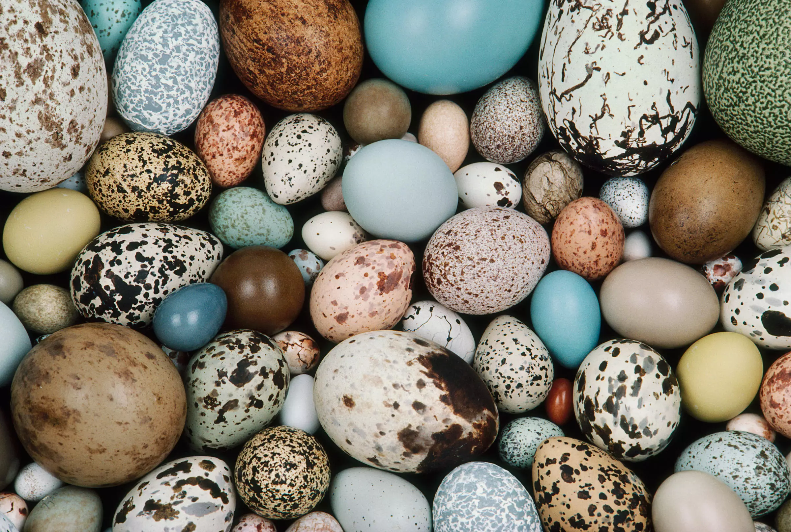

Általános információk
Magyarország területén számos őshonos madárfaj él, melyek nemcsak a táj gazdagságát és szépségét növelik, hanem fontos szerepet játszanak az ökoszisztémák működésében is. Az őshonos madarak a Kárpát-medence különböző élőhelyein élnek, és alkalmazkodtak a változó környezeti feltételekhez. Az őshonos madarak különböző életmódot folytatnak, egyesek inkább vízi környezetben, míg mások erdőkben vagy mezőkön találják meg a megfelelő élőhelyet. Az őshonos madarak az élőhelyükhöz való alkalmazkodásuk mellett rendkívül fontos szerepet töltenek be az ökoszisztémák fenntartásában, táplálékláncokban való részvételük révén.
A madarak általános biológiai jellemzői
A madarak (Aves) törzse az állatvilág egyik legnagyobb és legváltozatosabb csoportja, mintegy 10 000 ismert fajt tartalmaz. A madarak egyik legjellegzetesebb tulajdonsága a szárny, amely lehetővé teszi számukra a repülést. Azonban nem minden madár képes repülni – ilyen például a strucc, amely a repülés helyett gyors futásra specializálódott. A madarak másik fontos jellemzője a tojásrakás, ami más emlősöktől való eltérésük egyik alapvető vonása. A tojásokat a nőstények rakják le, és a legtöbb madár szülői gondoskodást nyújt a fiókáknak, biztosítva számukra a fejlődéshez szükséges táplálékot és védelmet.
Szárnyak és repülés
A madarak szárnyaik segítségével képesek repülni, ami az evolúciós fejlődésük során jött létre. A szárnyak az előző generációk végtagjaiból alakultak ki, és a repülés lehetőségeihez alkalmazkodva különböző formákat és méreteket öltöttek. A madarak repülése nagy mértékben a testfelépítésüktől függ. A nagy szárnyfelületű, könnyű testfelépítésű madarak, mint a sólymok és sasok, kitűnnek a hosszú távú vándorlásra, míg a kisebb testű madarak, mint a pintyek és cinegék, gyors manőverezésre specializálódtak. A szárnyak formája és mérete segít meghatározni a madár életmódját és alkalmazkodását a környezethez.
A tojók és a tojásrakás
A madarak egyedülálló jellemzője, hogy tojásokat raknak. A tojók különböző méretű és színű tojásokat tojhatnak, amelyek gyakran különböző mintázatokkal rendelkeznek. A tojásokat általában fészkekben helyezik el, ahol a tojók gondoskodnak a kikelő fiókákról. A fiókák táplálkozása kezdetben a szülők által biztosított táplálékon alapul, majd később, amikor elérik az önálló táplálkozáshoz szükséges fejlettséget, képesek egyedül is táplálkozni.
A madarak táplálkozása és tápláléklánc szerepe
A madarak táplálkozása rendkívül változatos, hiszen egyes fajok növényevők, míg mások ragadozók. A növényevő madarak elsősorban magvakat, gyümölcsöket és növényi részeket fogyasztanak, míg a rovarevő fajok rovarokkal és más apró élőlényekkel táplálkoznak. Az egyes madarak táplálkozási szokásai szoros összefüggésben állnak élőhelyükkel és életmódjukkal. A ragadozó madarak, mint például a sólymok és sasok, más állatokat fogyasztanak, míg a kisebb testű madarak gyakran rovarokat vagy magvakat esznek.A madarak a tápláléklánc fontos szereplői, hiszen segítenek a különböző állatpopulációk szabályozásában. A rovarevő madarak hozzájárulnak a kártevők kontrollálásához, míg a ragadozó madarak a kisebb emlősök és más madarak számát szabályozzák. A növényevő madarak pedig segítenek a növények szaporodásában, mivel magvakat fogyasztanak, amelyek később máshol elvetődnek, ezzel hozzájárulva a növényi élőhelyek terjedéséhez.

A madarak vándorlása
A vándorlás egy különleges és gyakori jelenség a madarak körében, különösen azokon a területeken, ahol az évszakok jelentős változásokat hoznak, például az éghajlat miatt. A madarak télen, amikor a hideg idő és a táplálékhiány miatt a környezet nem biztosít elegendő erőforrást, délebbre vándorolnak, ahol melegebb időjárás és bőségesebb táplálékforrások várják őket. A vándorlás során a madarak gyakran hosszú távokat repülnek, és a vándorlás során több ezer kilométert is megtehetnek.A vándorlás célja a túlélés és a szaporodás biztosítása, hiszen a téli hónapokban sok madárfaj nem képes elegendő táplálékot találni a szülőföldjén. A vándorlás során a madarak figyelembe veszik az időjárási viszonyokat, a nappalok és éjszakák hosszát, valamint az élelemforrásokat.
A madarak kommunikációja
A madarak számára a kommunikáció alapvető fontosságú, és számos módon fejezik ki magukat. A legelterjedtebb kommunikációs forma a hangok és énekek használata. A hímek különféle dallamokkal és hangokkal próbálják vonzani a nőstényeket, míg más madarak figyelmeztető hangokat adnak ki, hogy elriasszák a potenciális veszélyeket. A madarak éneke különösen fontos a szaporodási időszakban, amikor a hímek az énekkel hívják fel magukra a figyelmet, és próbálnak udvarolni a tojóknak. Az ének és a hangok az egyes madárfajok között jelentős különbségeket mutathatnak, és sok esetben a területvédelmi funkciókat is betölthetnek.
A madarak védelme
A madarak védelme és megőrzése kiemelten fontos, hiszen sok őshonos madárfaj ma már veszélyeztetett. Az élőhelyek csökkenése, a mezőgazdasági területek terjedése és az éghajlatváltozás mind negatívan hatnak a madárpopulációkra. Magyarországon több védett madárfaj is él, és a természetvédelmi intézkedések célja, hogy fenntartsák az őshonos madarak élőhelyeit, valamint biztosítsák számukra a megfelelő táplálékot és biztonságos fészkelőhelyeket.A madárvédelmi programok segítenek abban, hogy a madarak védelme és megóvása mindenki számára közös felelősséggé váljon. A megfelelő élőhelyek biztosítása, a madárfajok megóvása és a természetes egyensúly fenntartása nemcsak a madarak, hanem az ember számára is fontos, hiszen a madarak hozzájárulnak az ökológiai egyensúly fenntartásához és az életminőség javításához.
Madarak és az ember kapcsolata a történelem során
Az emberiség régóta szoros kapcsolatban áll a madarakkal, akár mint táplálékforrás, akár mint szimbólum vagy társállat. Már az ősi civilizációk is tisztelték a madarakat: Egyiptomban az íbisz és a sólyom isteni jelentést hordozott, míg a görög mitológiában is gyakran szerepeltek madarak, például a bagoly mint a bölcsesség jelképe. A madarak megfigyelése, énekeik és viselkedésük mindig is lenyűgözték az embereket, ezért már a korai időkben is megjelentek a művészetekben, irodalomban és vallási hagyományokban.A modern korban a madarak nemcsak díszmadárként vagy hobbiállatként jelentek meg, hanem a természetkutatás és a biológia fontos alanyaivá is váltak. A madármegfigyelés (birdwatching) mára egy népszerű hobbi lett világszerte, amely nemcsak kikapcsolódást nyújt, hanem hozzájárul a tudományos ismeretek gyarapításához is. Az ember és a madár közötti kapcsolat tehát nem csupán gazdasági vagy esztétikai, hanem mély kulturális és tudományos gyökerű is.
A madarak alkalmazkodóképessége és túlélési stratégiái
A madarak rendkívül jól alkalmazkodtak a különböző éghajlati és környezeti viszonyokhoz, ami egyik legnagyobb túlélési előnyük. Testfelépítésük, tollazatuk, táplálkozási szokásaik és viselkedési mintázataik is a környezetükhöz igazodva fejlődtek ki. Az egyes fajok tollazata például nemcsak hőszigetelést biztosít, hanem segít a rejtőzködésben vagy a fajtársak közti kommunikációban is. A télálló fajok vastagabb tollréteggel rendelkeznek, míg a trópusi madarak gyakran élénk színű, hőelvezető tollazattal bírnak.A madarak különféle túlélési stratégiákat alkalmaznak: egyesek fészkeiket nehezen megközelíthető helyekre építik, mások a fiókáik számának növelésével kompenzálják a magas elhullási arányt. A ragadozók elkerülésére sok madárfaj képes hangutánzásra, vagy riasztó színek használatára. A városi környezethez is sok faj sikeresen alkalmazkodott – például a varjak, galambok vagy a széncinegék – akik megtanulták kihasználni az ember közelségét, a mesterséges fészekhelyeket és a városi táplálékforrásokat.